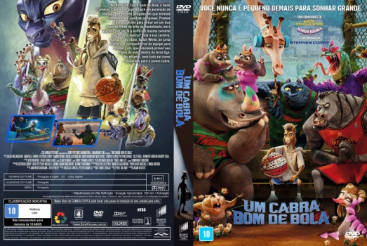
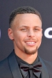

![link to Um Cabra Bom de Bola [Autorado] on Rotten Tomatoes](../img/tomatoes.png)
![link to Um Cabra Bom de Bola [Autorado] on TheMovieDb](../img/themoviedb.png)

Outro Título:GOAT
País:United States, 100 minutos
Idiomas falados:Inglês, Português
Gênero(s):Animação, Comédia, Família
Diretor(s):Tyree Dillihay
Escritor(es):Aaron Buchsbaum, Teddy Riley
Codec:MPEG-2 (DVD)
Número: 5918


Certificado:10
Sinopse:
No filme Um Cabra Bom de Bola, o bode Cameron Cade é um quarterback em ascensão de roarball, um esporte perigoso em que animais competem em quadras perigosas. Prestes a ser escolhido para entrar em um dos maiores times da elite da modalidade, ele é atacado por um fã e sofre um trauma cerebral que poderá destruir toda a sua carreira. Agora, o seu ídolo, Isaiah White, se junta a diversos companheiros de equipe para treinar Cam, que precisará provar seu digno de estar dentro da feroz liga. No entanto, nem tudo sai como o esperado para o jovem cabra.
Elenco: 

Tipo de mídia: DVD5,
Legendas: Português, Sem Legendas
Alugado: Não
Tela: Anamorphic Widescreen